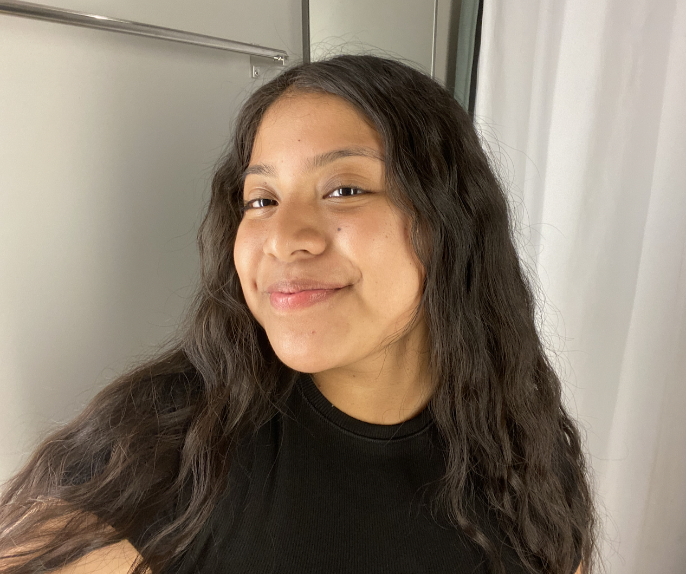

About
Hi there! My name is Dalia and I am an undergraduate Computer Science student at New Jersey City University. My passion for coding began in high school, where I participated in an enrichment program that introduced students to STEM careers. Since then, I have gravitated towards web development and UX/UI design. I am excited to create functional websites in the near future and develop stronger skills and foundations through Code the Dream! Aside from programming, I enjoy painting, baking, going on long walks, and exploring new places.
Experience
Girls Who Code College Loop
September 2024 - PresentAs Vice President of the GWC College Loop at New Jersey City University (NJCU), I help plan events to promote the club's mission, assist with questions members have, and share ideas with the rest of the covenant in order to maintain a positive and interactive attitude with everyone.
When We All Vote
March 2025 - PresentAs a student fellow I attend regularly scheduled fellowship program meetings and trainings with When We All Vote staff. Engage with community and organizing voter registration events. Help increase voter registration within community and advocate for the importance of voting!